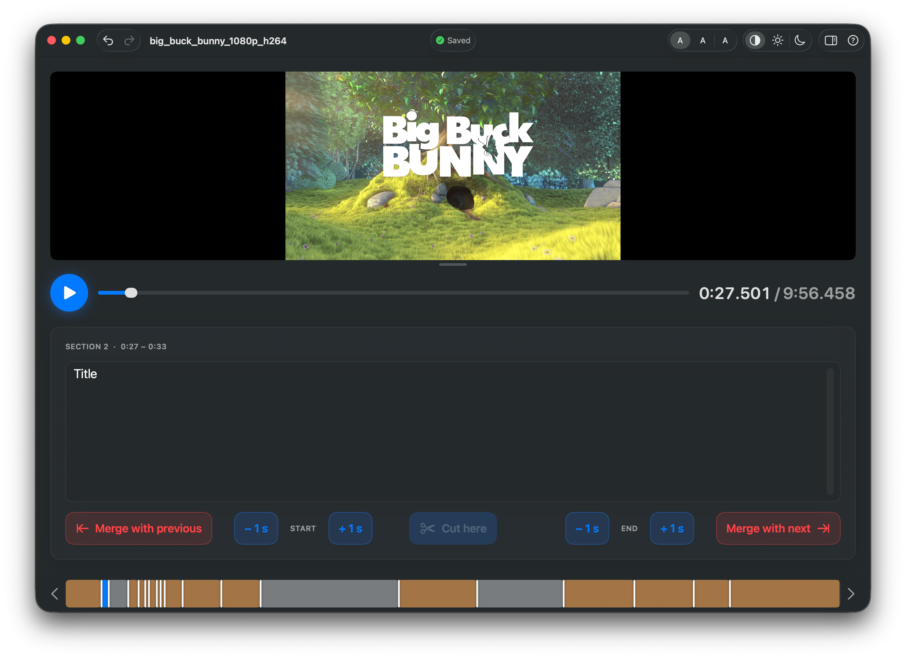

Tag your videos by section. Play, cut, describe — and it saves to subtitles automatically.
Free & open source · macOS 14 or later

Drop a video onto the window — with its .srt if you already have one.
Play, press Cut here at each scene change, and type what you see. Fine‑tune the boundaries with one click.
Everything is written to a standard .srt subtitle file as you go. No save button to remember.